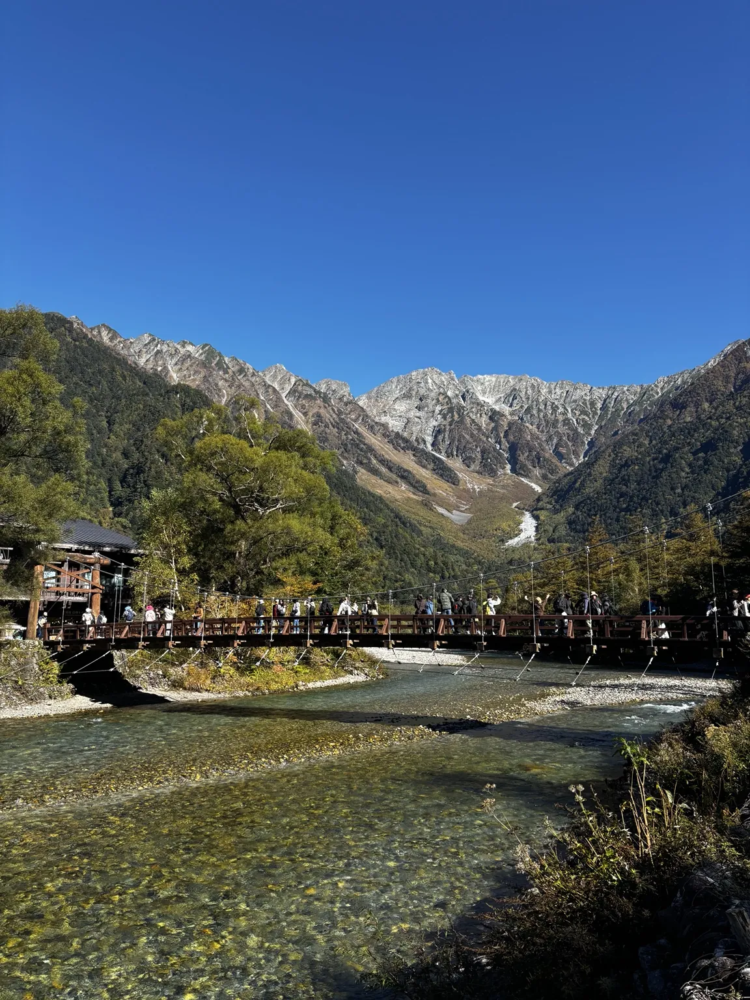

01 / ABOUT物語から、あなた自身の体験へ。
YAMATABI（ヤマタビ）とは
観て、ときめく。次の休日は、主人公に。
YAMATABI（ヤマタビ）は、ショートドラマを通じて山や自然の魅力に出会い、次の休日にはあなた自身が物語の主人公になる、そんな体験へつなぐメディアです。
物語を観て生まれた「行ってみたい」。その一歩を踏み出しやすくする情報やサービス、プロダクトを、これから届けていきます。
まずは、作品を観る02 / STORIESまずは、ひとつの物語から。
YAMATABI ORIGINALS / NOW PLAYING
まだ知らない物語に出会う。
物語を、再生する。
山と旅のショートドラマを、ここから。
作品ページからも動画をご覧いただけます。
秋の上高地の作品ページへ ↗FIND YOUR STORY
今の気分から、物語を探す。
気分と、してみたい体験をひとつずつ。今の自分に合う作品を探したら、その舞台での休日も想像してみませんか。
掲載作品の中からご案内します。
03 / VISIT THE STORY観た景色を、自分の記憶に。
BEYOND THE SCREEN
物語で出会った、あの場所へ。
「秋の上高地」の舞台を、もっと身近に。
河童橋周辺の見どころや、散策のヒントをご紹介します。

IT STARTED WITH A STORY.
04 / OUR PHILOSOPHY物語は、続いていく。
THE WORLD IS WAITING.
物語の続きは、あなたの人生の中に。
今日、誰かの物語に夢中になった。次の週末は、自分が主人公になる。
私たちは、物語に心が動いたその先にある、あなた自身の体験を大切にしています。
自分の足で歩き、自分の目で出会う。そこから、新しい物語が始まります。